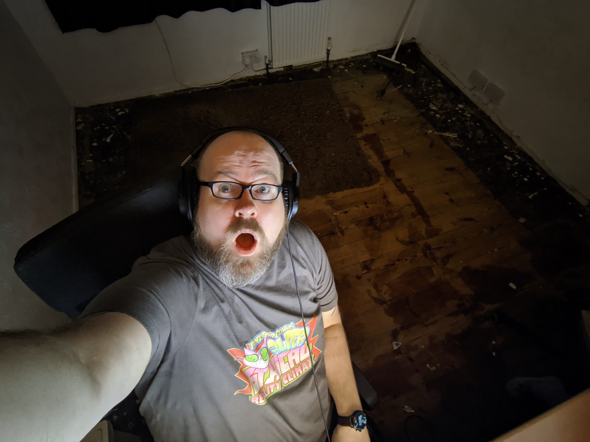
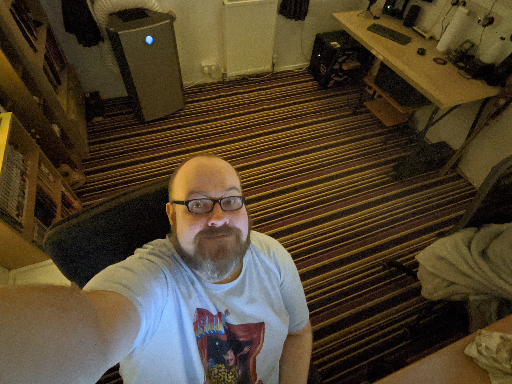

Vanity
Here is what my office looked like just a few days ago (well. A photo of it, I can’t project the character or spirit of the place…. Most pretentious think I’ve said ever, I know)

It looks cluttered (I like cluttered) and has a brown floor. The flooring, you can’t really see here, is made of Carpet Tiles. These things have proven to be a terrible idea over the last few years for a few reasons.
- They travel. They are designed for perfectly flat office floors not rickety old 50’s floor boards. As such, they move around a little and its annoying
- They are not as hard wearing as expected!
- My house is old and the rooms are not as square as you would think, so there was a lot of patchwork around the edges.
- They are a light brown. The worst brown.
- You can’t really see on this picture but there are gaps between some times (because of the aforementioned “not square room” I assume. Some tiles oddly seem to have gotten slightly smaller over time… odd one that is)
With all this in mind, it seeded like a good idea to change the shitty brown squares for a lush carpet!
I am not a rich man and when I get the idea to re-cover my floor it takes me a couple of months to actually gain the Gold required to make it happen. This week was that time.

Here is the time line of events presented in the form of yet another GLORIOUS bullet pointed list (The bullet points just make it all seem so much more interesting, IMO)
- Saturday: commence “trinket” removal (All things removed being Tetris-ed into my Bedroom/My daughters bedroom/My Bathroom/just generally around my landing area… Is landing the right word?)
- Sunday: Book/Furniture/Other removal - Leaving computers and desk. Removal of old shitty tiles of brown (Took ages)
- Monday (Morning): up at 7AM. Remove computers (took longer than you would expect) and unscrewed some shelves that prevent the desk from moving out of its ‘nook’

- Monday (Afternoon): Carpet heroes arrive with my ostentatious master covering. Only one or two shots at my terrible taste were taken. After half an hour of hard work they rode of into the sunset leaving my life much improved.
- Monday Evening/Tuesday-ALL-DAY: Return office to full working order as well as some sorting, ordering, binning, moving and tweaking.
Once it was all back in and wires were a little bit more organised than they were before, in my opinion over 20 Million times better.
Here is an RL screen shot of the first moments in my finally restored palace of joy

You may have noticed that there is not a nice desk at the other side of the room. It’s a bit of kitchen work top I had left over from when the house received a kitchen upgrade a few months ago. I slapped some cheap IKEA legs under it and called it a “desk”

The new desk will mostly be for when I want to fuck around with old computers or maybe toasters, but it also doubles up as a nice little desk for my ‘other’ PC. My home server machine is slotted in next to it. Putting all my useful PC’s in one room without being insanely cluttered is nice. This desk also gives me a more sensible place to work when I’m peering inside PC cases.

Over all, I’m thrilled at the results. The one down side is that my old arse house has old arse floorboards. Those boards are not actually straight or even. So the carpet looks “uneven” in a few places but this is a result of the lines tracing the contours of the floor. Should have thought about that before it got strips I suppose.
I’ve decided that for the first time ever, I’m going to try and live my life without a rug in the middle of the floor. I tried a rug. It broke up my glorious stripes and what’s the point in having stripes if you are not going to bask in them?
Thoughts you may have had.
This is where, through the power of future sight and time travel I will attempt to address thoughts you may have had as you read the things I wrote for you to read. For entertainment (of me mostly) I will only agree with your thoughts!
- YES! There will be more bullet points for no reason!
- YES! that IS a Besom Broom you can see next to my desk.
- YES! My wiring is terrible. And YES! I don’t care about that because pretty wiring makes for HARD maintenance for people who actually mess with PCs and don’t just post photos to /r/Battlestations
- YES! It is a hideous carpet! I like it. OKAY! I FUCKING LIKE IT! OH-KAH-AAA-AY?
- YES! my window frames DO look Dirty! I assure you, they are clean. Just VERY old and stained. Planning on bleaching them soon.
- YES! There is a lot of shit in my office. I like it like that! Feels like home
- YES! The office DOES look tiny on those picture. My phone (Pixel 3) has a ‘wide’ mode on the selfie camera. It gets it all on there, but the effect makes it look like a shoe box.
- YES! Many of you will have been bored shitless by this post. You should have stopped reading… Dummy!
- YES! I will stop fucking around with the office and get back to making YouTube videos. RIGHT NOW!
Hex out! Drops mic!